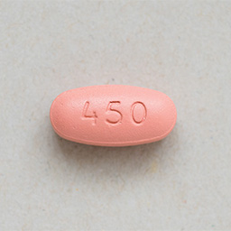

Valganciclovir
BRAND NAMEs: VALCYTE®, APO-VALGANCYCLOVIR®
This medication comes as an oral tablet and liquid.
- Valganciclovir tablet:
- 
What is this medication for?
This is an anti-viral medication. In patients after transplantation it is most commonly used to prevent or treat a viral infection called CMV (Cytomegalovirus).
How should I take this medication?
This medication should be taken with food to improve absorption. It can be taken at any time of the day and may be taken at the same time as your other medications. Take it at the same time of the day every day with a full glass of water to prevent kidney stones.
Valganciclovir can lower the number of your white blood cells, red blood cells and platelets. You may be at increased risk for infection and bleeding. Regular bloodwork will be done to check your blood cell counts.
What are some possible side effects of this medication?

Drowsiness or sleepiness
Do not drive, operate machinery or do tasks that require you to be alert until you know how this medication affects you.

Nausea, vomiting, diarrhea
Take with food. Contact your doctor if this is persistent or bothersome.


Increased risk for infection.
Signs or symptoms of infection (fever or chills, cough, sore throat or pain or difficulty passing urine)


Increased risk for bleeding.
Signs of bleeding (bruising, tarry stools, vomiting of blood or blood in the urine)


Decreased red blood cells.
Signs of decreased red blood cells (weakness or tiredness, fainting spells, light-headedness)